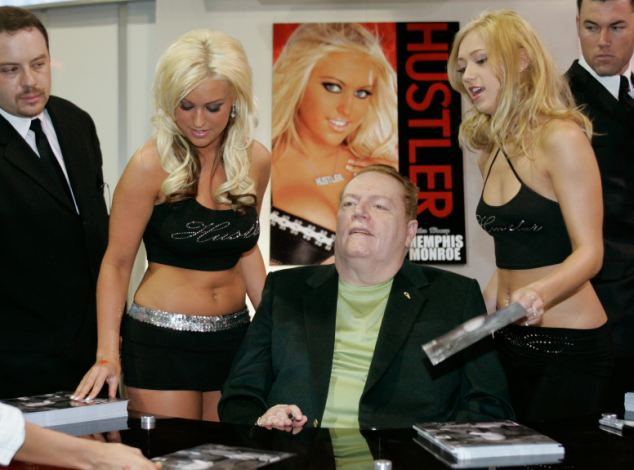

Lo show di Larry King
COME CURANO L’IMPOTENZA I MILIARDARI
La disfunzione erettile è un problema che non è collegato con i soldi che si guadagnano: un giorno sei in salute, il giorno dopo no. I soldi che hai in tasca non agiscono in nessun modo sul tuo pene. Potrà una persona normale utilizzare il segreto dei miliardari per avere erezioni di marmo?
'Il sesso è qualcosa di fantastico anche in età avanzata, lo so bene io', Larry Flint.

Larry Flint è un miliardario, il creatore della rivista porno Hustler ed una legenda contemporanea. È stato lui, sostanzialmente, ad avviare la rivoluzione sessuale tra USA ed Europa. Una rete di strip club, 5 moglie, modelle stupende sempre intorno. Non è una vita, è un sogno, non trovate?
Per la prima volta lo show di Larry King esce dai limiti televisivi!!
È arrivato il
momento di fare le domande più scottanti!


– Larry, lei è una delle figure più scandalose dell’industria del porno. La sua rivista Hustler si è rivelato un vero e proprio punto di svolta! Lei si è più volto dovuto difendere in tribunale da vari accuse soprattutto di carattere morale ed etico, ma ne è sempre uscito pulito. Come ha fatto?
– Ho sempre pensato che il sesso sia una cosa di naturale, e non vedo cosa ci sia da vergognarsi. Cosa c’è di male nell’eccitazione? In tribunale mi sono limitato a spiegare il mio punto di vista. La mia rivista è legata a ciò che amo di più nella vita, il sesso. Ho preferito fare quello che mi piace piuttosto che lavorare in ufficio.

– Si è sposato cinque volte, è stato ferito, è diventato invalido ma ha tuttavia continuato ad avere varie storie. Sia sincero, è il suo portafoglio ad attirare le donne?
– Ho altre cose di cui vantarmi, oltre ai soldi. Prima ero sempre presente durante le riprese. Ero praticamente sempre eccitato. E vorrei bene vere, ero circondato da splendide ragazze nude. Ogni tanto mi sposavo quelle più calde. Ma nessuna è mai riuscita a soddisfare pienamente i miei desideri.
– Vuole dire che sessualmente erano meno attive di lei?
– Se, letteralmente me le scopavo fino a far perdere loro i sensi. E nessuna cifra riusciva a tenerci insieme. Però dopo che quel maledetto serial killer mi ha ferito al basso ventre ho iniziato ad aver problemi di sesso..
Passavo il tempo in sala operatoria, per tentare di curare il pene completamente. Sono passati anni. Col passare del tempo ho iniziato a fare cilecca sempre più spesso: dopo il trauma riuscivo a farlo stare su solo al secondo, terzo tentativo. Col passare degli anni praticamente non avevo più erezioni. Nel migliore dei casi solo dopo un’ora e mezza di attenzioni femminili ero pronto.

Mi ricordo un’occasione particolare: durante le riprese mi era piaciuta una ragazza e l’ho invitata nel mio camerino durante la pausa. Non riuscivo a metterglielo dentro per quanto era moscio. E lei mi ha detto che uso i soldi al posto del pisello per soddisfare le donne.
È stato un duro colpo. Durante il fine settimana sono andato fuori Città con un business partner, ci siamo fatti qualche bicchiere e gli ho raccontato del mio problema. E lui mi ha chiesto: scusa ma non l’hai provato? Lo prendono tutti gli uomini che hanno questo problema. Sapete, mi è venuto da ridere. I medici non mi aiutavano e lui mi offriva delle pillole miracolose. Poi però ci ho pensato su. Magari mi avrebbero aiutato?

– Com’è andata a finire?
– Ho pensato che sarebbe potuta essere la mia ultima possibilità. Ho contattato il mio medico e mi ha fatto vedere gli studi riguardanti il preparato. Sono rimasto scioccato: la maggior parte degli uomini si è liberata per sempre dai problemi di impotenza senza problemi per la salute e senza danni all’organismo!
– Questo preparato è simile al Viagra?
– No, ma cosa dice! Io una volta per Stupidità l’ho provato il Viagra. La sera ho preso una pillola ed il giorno dopo avevo tremendi dolori al pene, ho iniziato ad avere la febbre e mi sentivo male. Avevo paura che avrei dovuto chiamare il dottore. Si, andavo in giro con il pene duro e non potevo toccarlo: mi faceva male.
– Vi racconterò la mia storia e voi poi potrete trarne le vostre conclusioni da soli. Io ho ordinato sul sito ufficiale del produttore. La prima settimana non ho notato nulla, poi una mattina mi sono svegliato con un’erezione! Come da giovane! Ho deciso di chiamare le modelle. Avevo paura. Magari mi si sarebbe potuto ammosciare durante il sesso! Sono arrivate due ragazze. Sono rimasto a bocca aperta. Io a difficoltà pensavo di poterne soddisfare una, e qui me ne sono arrivate due! Sostanzialmente abbiamo scopato per armeno tre ore, le ragazze erano al settimo cielo per la felicità! E che urla che ho sentito tutto il tempo!

– Probabilmente il preparato ha qualche effetto indesiderato?
– Assolutamente nessuno! Funziona senza problemi, l’ho provato in prima persona. Come ingredienti è fantastico, lo conferma ogni medico. si può assumere anche con l’alcool: non c’è nessun prodotto chimico al suo interno, solo componenti naturali. E non solo migliorano l’erezione, ma la ripristinano anche. Perfino in quei casi disperati come il mio.
– Sembrerebbe semplicemente fantastico! Dove posso acquistare ?
– Ora si può comprare solo sul sito ufficiale, per questo il prezzo è così basso.
Se mi ha aiutato, allora può aiutare chiunque, ne sono sicuro. Ci sono molte persone che possono confermare le mie parole, ho comprato 10000 confezioni per far si che i miei spettatori potessero comprarlo a metà prezzo.
– Grazie mille Larry! Non ci sono più domande, possiamo finire l’intervista. Arrivederci!